This study investigates the empirical validity of the single-factor Capital Asset Pricing Model (CAPM) at the industry level using monthly data from 1999 to 2023. Employing value-weighted returns across ten industry portfolios, we assess the time variation in market betas, the uncertainty of estimated risk premiums, and the magnitude of conditional pricing errors. Our findings reveal substantial instability in beta estimates, statistically insignificant market risk premia, and persistent alpha deviations—indicating that CAPM omits key structural factors in explaining cross-sectional return differences. These results question the model’s robustness as a tool for cost of equity estimation and portfolio construction.
This study investigates the empirical validity of the single-factor Capital Asset Pricing Model (CAPM) when applied to value-weighted industry portfolios over a multi-decade horizon (1999–2023). While the CAPM remains a foundational model in asset pricing theory, its assumptions—such as static equilibrium and constant risk loadings (betas)—may be unrealistic in dynamic, evolving markets. In this context, we assess whether the model adequately explains cross-sectional return differences at the industry level.
We focus on three core empirical challenges: 1. The time-variation in industry-specific market betas, which undermines the model’s assumption of stable covariance structures. 2. The uncertainty in estimating the market risk premium, which can distort expected returns and cost-of-capital estimations. 3. The presence of persistent pricing errors (alphas) that suggest structural mispricing and potentially omitted risk factors.
Our approach draws on the empirical framework pioneered by Fama and French (1997), extended with contemporary data and methods. Using firm-level CRSP data and SIC-based industry classification, we construct monthly value-weighted portfolios and implement rolling beta estimations, cross-sectional regressions, and alpha decomposition to evaluate the model’s performance.
References:
Fama, Eugene F., and Kenneth R. French. “Industry costs of equity.” Journal of Financial Economics 43.2 (1997): 153–193.
Fama-French Data Library. CRSP and SIC Classification Methodologies.
Data and Methodology
Data Source:
CRSP: Monthly time-series market capitalization data for public stocks listed on Nasdaq, NYSE, and AMEX from 1994-01 to 2023-12.
Fama-French Data Library: Market excess returns (Rm-Rf) and one-month Treasury bill rates as the proxy for the risk-free rate.
Time Frequency and Period: Monthly, covering 30 years (1994-01 to 2023-12), utilizing 5-year rolling windows to estimate monthly industry-specific betas (initial estimation starts from 1999-02).
Industry Classification: Ten major industries defined based on SIC codes:
\(E[r_i]\): Time-averaged return (i.e., realized net growth rate) of industry portfolio ( i )
\(r_f\): Time-averaged return of the risk-free asset (e.g., one-month T-bill)
\(E[r_m]\): Time-averaged return of the market portfolio, defined as a value-weighted convex combination of all industry portfolios
\(\beta_i\): Industry-specific market beta, representing the linear projection coefficient onto the market excess return under a single-factor model. It is traditionally assumed to be constant under static equilibrium conditions.
\(\alpha_i\): Orthogonal component of the industry portfolio’s return relative to the market factor; equivalently, the mean residual from an orthogonal projection onto the market return. This term captures either pricing errors under CAPM or the effects of omitted risk factors.
The Alpha
The interpretation of \(\alpha_i\) aligns with the residual term in the linear projection:
where \(\alpha_i\) is the average component of \(\varepsilon_i\), and \(\varepsilon_i\) is orthogonal to the regressor. Under ideal CAPM assumptions, \(\alpha_i = 0\), but empirically it often deviates from zero due to model misspecification or omitted risk factors.
Simple Logical Analysis
To better understand the structural dynamics behind industry-driven market behavior, we consider two stylized scenarios:
First, imagine a situation where a single dominant industry—such as Services—accounts for a disproportionately large share of total market capitalization (e.g., 70%). In this case, the market portfolio, defined as a value-weighted aggregate, would exhibit a very high linear correlation with the dominant industry’s return. This undermines diversification and implies that market-wide movements are largely driven by a single sector.
Second, consider a scenario where two large industries, each accounting for ~45% of the market, are perfectly negatively correlated. Such a structure would lead to very low overall market volatility, as gains in one sector would offset losses in the other, thus creating strong hedging opportunities and enhancing the benefits of diversification.
In reality, however, the two industries that collectively dominate the market—Services and Manufacturing—exhibit strong positive correlation. As a result, market volatility is amplified, and hedging opportunities are limited, especially in passive value-weighted portfolios. This concentration and correlation structure challenge one of CAPM’s implicit assumptions: that the market portfolio is a well-diversified proxy for systematic risk.
From 1999 to 2023
Historical excess risk premiums of the US stock market
Code
# 30 years of crsp_monthly# start_date = "1994-01-31" # i.e. '1994-02-01'# end_date = "2023-12-31"# Because of 5 year rolling estimation of monthly betastart_date ="1999-01-31"end_date ="2023-12-31"print(f"Start Date: {start_date}")print(f"End Date: {end_date}")
Start Date: 1999-01-31
End Date: 2023-12-31
Code
#@title Libraries and Time-windowimport pandas as pdimport numpy as npimport matplotlib.pyplot as pltimport seaborn as snsimport statsmodels.formula.api as smfimport sqlite3tidy_finance = sqlite3.connect("../../colab/tidy_finance_python.sqlite")factors_ff3_monthly = pd.read_sql_query( sql="SELECT month, mkt_excess, rf FROM factors_ff3_monthly", con=tidy_finance, parse_dates={"month"})# 1994-01-01 indicates mktcap at 1994-01-31 which is the start date# the first return is calculatedcrsp_monthly = pd.read_sql_query( sql="SELECT permno, month, ret, ret_excess, mktcap, mktcap_lag, siccd, industry, exchange FROM crsp_monthly", con=tidy_finance, parse_dates={"month"})# 5 year rolling estimated beta is available from 1999-01-01beta = (pd.read_sql_query( sql="SELECT permno, month, beta_monthly FROM beta", con=tidy_finance, parse_dates={"month"}))beta_lag = (beta .assign(month =lambda x: x["month"] + pd.DateOffset(months=1)) .get(["permno", "month", "beta_monthly"]) .rename(columns={"beta_monthly": "beta_lag"}) .dropna())# Calculate 12-month moving averagefactors_ff3_monthly['mkt_excess_ma12'] = factors_ff3_monthly['mkt_excess'].rolling(window=12).mean()# Plot: Market Excess Return with 12-month Moving Averageplt.figure(figsize=(12, 5))plt.plot(factors_ff3_monthly['month'], factors_ff3_monthly['mkt_excess'], label='Monthly Excess Return', color='lightsteelblue')plt.plot(factors_ff3_monthly['month'], factors_ff3_monthly['mkt_excess_ma12'], label='12-Month Moving Average', color='darkblue')plt.axhline(0, color='gray', linestyle='--', linewidth=1)plt.title('Monthly Market Excess Return with 12-Month Moving Average', fontsize=14)plt.xlabel('Date')plt.ylabel('Excess Return')plt.legend()plt.grid(True)plt.tight_layout()plt.show()
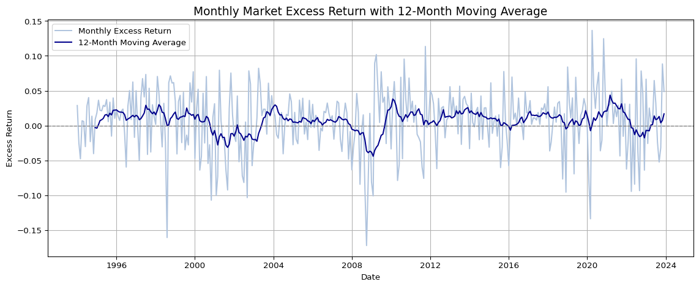
Structural Shifts in Industry Concentration
Inter-Industry Divergence: Growing disparity in concentration levels across industries
Intra-Industry Consolidation: Increasing dominance of top firms within each industry
Code
#@title Number of Firms in Industry Portfolios# First, create a dummy column for countingcrsp_monthly['count'] =1# Create the pivot tablepfo_number = crsp_monthly.pivot_table( values='count', # The column to aggregate (count in this case) index='month', # The column to use as index columns='industry', # The column to use as columns aggfunc='sum', # The aggregation function to use (sum in this case) fill_value=0# Fill NaN values with 0)sorted_columns = pfo_number.mean().sort_values(ascending=False).indexpfo_number[sorted_columns].plot( kind='line', xlabel='month', ylabel='number of firms', title='Number of Firms in Industry')plt.legend(bbox_to_anchor=(1.0, 1.0)) # legend outsideplt.show()pfo_number[['Missing','Public']].plot( kind='line', xlabel='month', ylabel='number of firms', title='Number of Firms in Industry')plt.show()print('The average number of firms in Missing industry is', pfo_number['Missing'].mean().round(2))
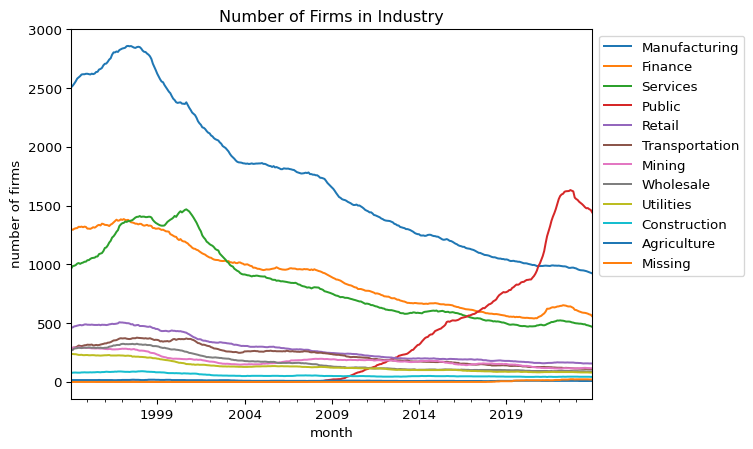
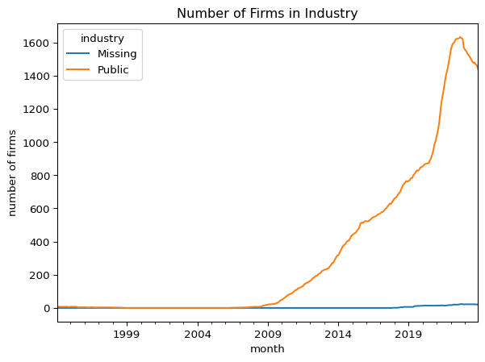
The average number of firms in Missing industry is 2.82
Code
#@title Industry Concentration Dynamics# Average Firm Size in Industry Portfolios (Public in Black)pfo_size = crsp_monthly.pivot_table( index='month', columns='industry', values='mktcap', aggfunc='mean')sorted_columns = pfo_size.mean().sort_values(ascending=False).indexax = pfo_size[sorted_columns].plot( kind='line', xlabel='month', ylabel='mktcap', title='Average Firm Size in Industry Portfolios', linewidth=1.5)# Set Public line to blackfor line, col inzip(ax.get_lines(), sorted_columns):if col =="Public": line.set_color('black') line.set_linewidth(2.0)plt.legend(bbox_to_anchor=(1.0, 1.0)) # legend outsideplt.show()
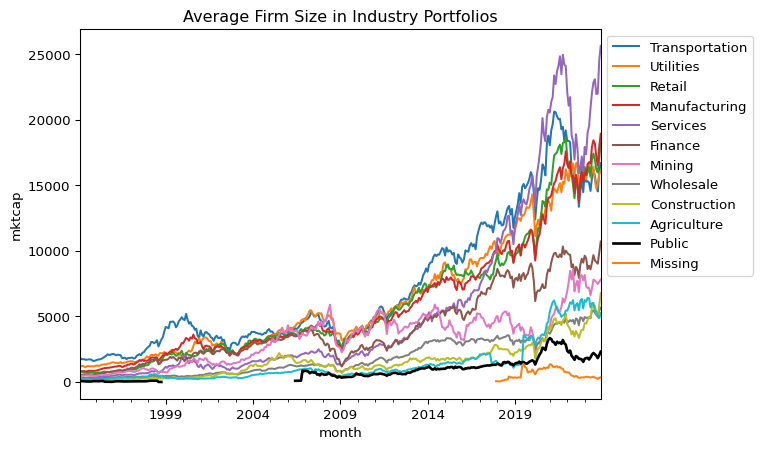
Code
#@title 산업 내 HHI (Herfindahl-Hirschman Index)# Step 1: 각 월, 각 산업 내 기업별 시가총액 비중 계산crsp_monthly['mktcap_share'] = ( crsp_monthly .groupby(['month', 'industry'], group_keys=False)['mktcap'] .transform(lambda x: x / x.sum()))# Step 2: HHI 계산 (각 산업의 각 월에 대해)industry_hhi = ( crsp_monthly .assign(mktcap_share_sq=lambda x: x['mktcap_share'] **2) .groupby(['month', 'industry'], group_keys=False)['mktcap_share_sq'] .sum() .unstack() .sort_index())# 산업 내 Top-5 Market Cap Share 계산 def top5_share_func(df):# group에는 'month', 'industry'가 포함되므로 사용하지 않음 top5_sum = df.nlargest(5, 'mktcap')['mktcap'].sum() total = df['mktcap'].sum()return top5_sum / total if total !=0else np.nan# Step: 그룹핑 컬럼을 index로 빼서 apply의 group에서 제거top5_share = ( crsp_monthly .sort_values(['month', 'industry', 'mktcap'], ascending=[True, True, False]) .set_index(['month', 'industry']) # <-- group에 포함되지 않게 index로 설정 .groupby(['month', 'industry'], group_keys=False) .apply(top5_share_func) # group에 month/industry 포함되지 않음 .unstack() # 산업별 column .sort_index())selected_industries = ['Transportation', 'Utilities', 'Retail', 'Manufacturing', 'Services']# HHI plotindustry_hhi[selected_industries].plot( figsize=(12, 5), title='HHI: Industry Concentration Over Time', ylabel='Herfindahl Index', xlabel='Month')plt.legend(bbox_to_anchor=(1.0, 1.0))plt.show()# Top-5 Share plottop5_share[selected_industries].plot( figsize=(12, 5), title='Top-5 Market Cap Share in Each Industry Over Time', ylabel='Top-5 Share', xlabel='Month')plt.legend(bbox_to_anchor=(1.0, 1.0))plt.show()
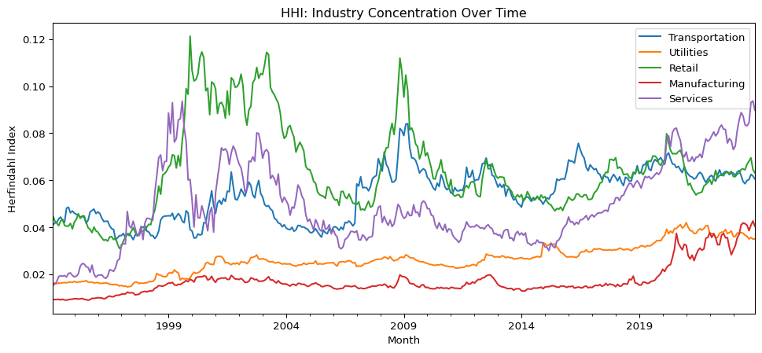
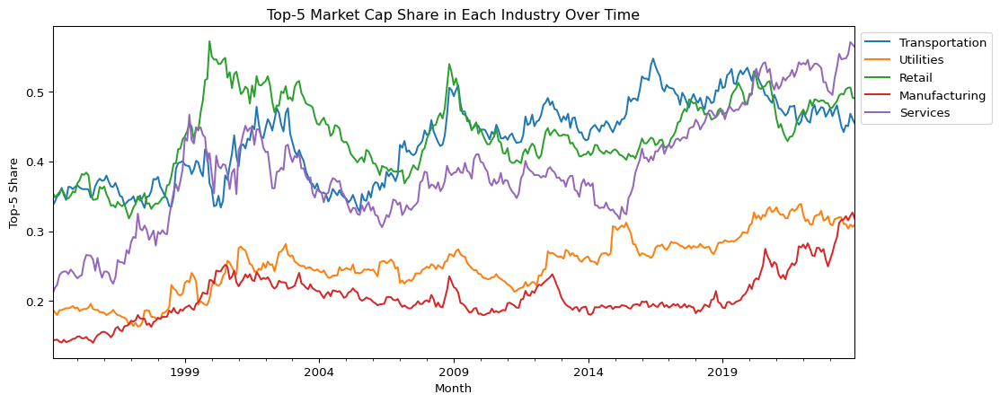
The sharp increase in Top-5 market capitalization share since the post-2009 period highlights a structural shift toward greater industry concentration—particularly within the transportation, utilities, retail, manufacturing, and services sectors. This trend indicates that a small number of dominant firms increasingly account for a disproportionate share of total industry market value.
While average firm size already suggested this pattern, the Top-5 share offers a direct and quantifiable measure. Notably, the Services sector has experienced a persistent rise in concentration since 2011, likely driven by digital transformation, platform-based business models, and network effects. The Manufacturing sector, meanwhile, remained relatively stable until 2019 before undergoing a rapid increase in dominance, possibly due to technology-driven scale economies.
These developments coincide with macroeconomic shifts following the 2008 financial crisis, including accommodative policies like quantitative easing (QE), which may have reinforced the “winner-takes-most” dynamics. Importantly, this rising concentration may partially explain observed deviations from CAPM predictions, as industry-level returns become increasingly shaped by a few large-cap firms with idiosyncratic risk-return profiles.
Evolution of Industry Market Cap Shares (1999–2023)
Code
#@title df: Drop industry 'Missing' and Re-classify industry 'Public' to 'Services'# Copy originaldf = crsp_monthly.copy()# Drop Missingdf = df[df['industry'] !='Missing']# Reclassify Public → Servicesdf.loc[df['industry'] =='Public', 'industry'] ='Services'# Merge with factor data and betadf = (df .merge(beta, how="inner", on=["permno", "month"]) .merge(beta_lag, how="inner", on=["permno", "month"]) .merge(factors_ff3_monthly, how="inner", on=["month"]))
Code
#@title Market Cap Share of industry portfoliospfo_share = df.pivot_table(index='month', columns='industry', values='mktcap', aggfunc='sum')# Normalize pfo_share to sum to 1 for each rowpfo_share[:] = pfo_share.div(pfo_share.sum(axis=1), axis=0)sorted_columns = pfo_share.mean().sort_values(ascending=False).indexpfo_share[sorted_columns].plot( kind='line', xlabel='month', ylabel='mktcap', title='Market Cap Share of industry portfolios')plt.legend(bbox_to_anchor=(1.0, 1.0)) # legend outsideplt.show()
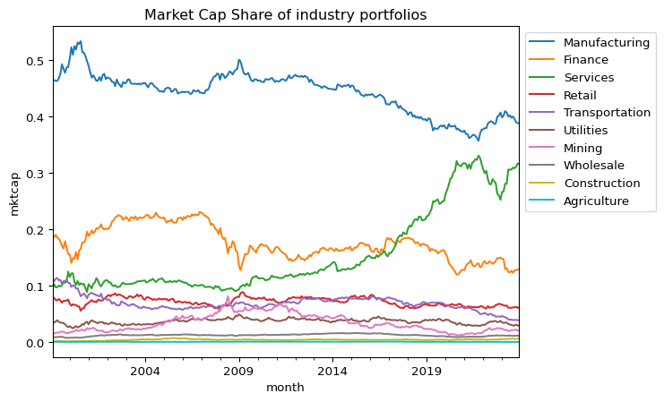
The market portfolio’s composition—measured by the value-weighted market capitalization share of each industry—has experienced notable structural changes since 1999. While the majority of industries have remained relatively small in terms of aggregate market weight, three sectors—Manufacturing, Services, and Finance—have consistently dominated.
In particular, the Manufacturing sector’s dominance has gradually declined from nearly 50% in 1999 to below 40% in 2023. Conversely, the Services sector, especially after absorbing “Public” firms, has expanded significantly, rising from under 20% to over 30% in the same period. The Finance sector saw a sharp decline following the 2008 financial crisis and has since stabilized at a lower level.
These compositional shifts reflect evolving patterns in industrial dominance and have direct implications for the systematic risk profile of the aggregate market portfolio. As sectoral weights change, so too does the market beta composition underlying the CAPM framework.
Time-Varying Systematic Risk by Industry
Code
#@title Time-varying industry Market Betas# ===============================================# 1. Market Cap-weighted Industry Beta (Value-Weighted Beta)# ===============================================# CAPM의 factor loading인 beta는 산업 내 대형 기업일수록 시장과의 공분산에 더 큰 영향을 미치므로,# 산업별 단순 평균 beta는 산업의 실제 systematic risk를 과소/과대평가할 수 있습니다.# 따라서 각 기업의 시가총액으로 가중평균한 value-weighted beta를 계산합니다.# Step 1: Beta weighted by market capdf['beta_weighted'] = df['beta_monthly'] * df['mktcap']# Step 2: Group by month and industry to compute weighted betapfo_beta_weighted = ( df.groupby(['month', 'industry'])[['beta_weighted', 'mktcap']] .sum() .assign(beta_vw=lambda x: x['beta_weighted'] / x['mktcap']) .reset_index() .pivot(index='month', columns='industry', values='beta_vw'))# ===============================================# 2. Time-Series Plot of Value-Weighted Industry Betas# ===============================================sorted_columns = pfo_beta_weighted.mean().sort_values(ascending=False).indexpfo_beta_weighted[sorted_columns].plot( kind='line', figsize=(12, 6), xlabel='Month', ylabel='Value-weighted Beta', title='Time-varying Value-weighted Industry Beta')plt.legend(bbox_to_anchor=(1.0, 1.0))plt.show()# ===============================================# 3. Boxplot of Value-Weighted Industry Betas# ===============================================# Melt for seabornpfo_beta_weighted_melted = pd.melt( pfo_beta_weighted.reset_index(), id_vars=['month'], value_vars=pfo_beta_weighted.columns)pfo_beta_weighted_melted.columns = ['month', 'industry', 'beta']# Sort industries by average betamean_beta_vw = pfo_beta_weighted_melted.groupby('industry')['beta'].mean().sort_values(ascending=False)# Boxplotplt.figure(figsize=(10, 6))sns.boxplot( y='industry', x='beta', data=pfo_beta_weighted_melted, order=mean_beta_vw.index, orient='h')plt.title('Boxplot of Value-weighted Beta for Each Industry (Sorted by Mean)')plt.show()# ===============================================# 4. Scatter Plot: Mean Beta vs. Mean Market Cap Share# ===============================================# Mean industry beta (value-weighted)beta_mean = pfo_beta_weighted.mean()# Mean market cap share (already normalized)mktcap_share_mean = pfo_share.mean()# Scatter Plotplt.figure(figsize=(8, 6))sns.scatterplot(x=beta_mean, y=mktcap_share_mean)for industry in beta_mean.index: plt.text(beta_mean[industry], mktcap_share_mean[industry], industry, fontsize=9)plt.xlabel('Mean Industry Beta (Value-weighted)')plt.ylabel('Mean Market Cap Share')plt.title('Mean Industry Beta vs. Mean Market Cap Share')plt.grid(True)plt.show()
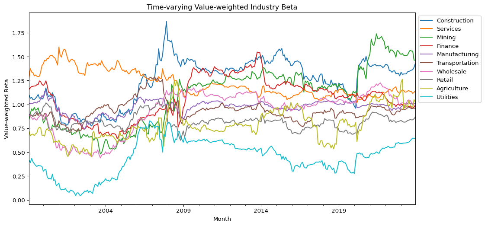
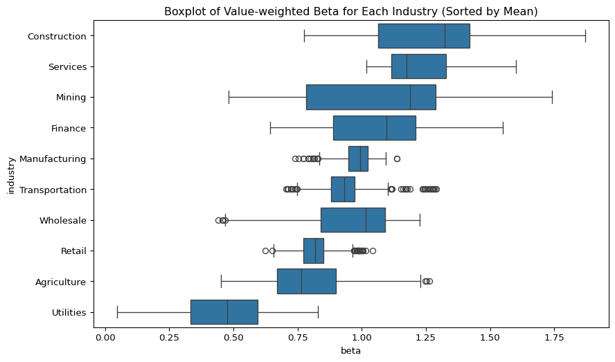
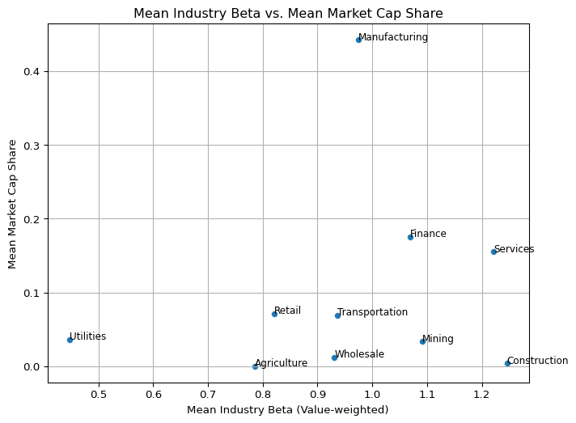
Analysis of value-weighted industry betas uncovers several important dynamics in the evolution of systematic risk exposures across sectors.
First, the time-series plot shows a random-walk-like behavior in beta trajectories, suggesting that industry-level risk exposure is far from stable and must be modeled as time-varying. The boxplot reinforces this heterogeneity:
Industries such as Manufacturing and Retail exhibit narrow beta distributions, indicating consistent risk exposure among firms in these sectors.
In contrast, Mining and Construction show wide dispersion, pointing to greater intra-industry variability in systematic risk.
A comparison of beta levels also reveals structural asymmetries:
Retail, Utilities, and Agriculture maintain beta values consistently below one, aligning with their roles as defensive sectors.
Conversely, the Services sector displays beta values above one, along with a rising market cap share—suggesting it has become a key driver of market returns.
This imbalance implies that a value-weighted market portfolio—heavily exposed to high-beta sectors—offers limited hedging potential, especially in downturns.
The scatter plot of mean beta vs. mean market cap share further illustrates this, with Manufacturing standing out as a structural outlier: it holds an average beta near 1 but dominates in market share. These findings support a more strategic allocation to low-beta sectors, particularly in anticipation of macroeconomic risks. This aligns with recent investment behavior by Buffett, who has increased exposure to retail-sector firms like Ulta Beauty, likely as a hedge against cyclical downturns.
Empirical Testing of CAPM Using Fama-MacBeth Regressions
Code
#@title 10 Value-Weighted industry pfosdef weighted_avg(x, weights):"""Calculates the weighted average of a series."""return np.average(x, weights=weights)# Apply weighted_avg function to pivot_tablepfo_vw_ret_excess = df.pivot_table( index='month', columns='industry', values='ret_excess', aggfunc=lambda x: weighted_avg(x, df.loc[x.index, 'mktcap']))pfo_vw_beta_lag = df.pivot_table( index='month', columns='industry', values='beta_lag', aggfunc=lambda x: weighted_avg(x, df.loc[x.index, 'mktcap']))mean_vw_beta_lag = pfo_vw_beta_lag.mean().rename('mean_beta_lag')mean_vw_ret_excess = pfo_vw_ret_excess.mean().rename('mean_ret_excess')mkt_excess = factors_ff3_monthly['mkt_excess'].mean()rf = factors_ff3_monthly['rf'].mean()
Code
#@title Cross-sectional regressions for each month# Fama-MacBeth (1973) two-pass procedure risk_premiums = (df .groupby("month")[['ret_excess', 'beta_lag']] .apply(lambda x: smf.ols(formula="ret_excess ~ beta_lag", data=x).fit().params) .reset_index())# Time-series Aggregation (i.e. average)# average across the time-series dimension to get the mean risk premium for each characteristic# calculate t-test statistics for each regressor,# critical values of 1.96 (at 5% significance) or 2.576 (at 1% significance) for two-tailed significance testsmean_premiums = (risk_premiums .melt(id_vars="month", var_name="factor", value_name="estimate") .groupby("factor")["estimate"] .apply(lambda x: pd.Series({"mean_premium": 100*x.mean(),"t_statistic": x.mean()/x.std()*np.sqrt(len(x)) }) ) .reset_index() .pivot(index="factor", columns="level_1", values="estimate") .reset_index())# reporting standard errors of risk premiums, after adjusting for autocorrelation (Newey and West (1987) standard errors)mean_premiums_newey_west = (risk_premiums .melt(id_vars="month", var_name="factor", value_name="estimate") .groupby("factor") .apply(lambda x: ( x["estimate"].mean()/ smf.ols("estimate ~ 1", x) .fit(cov_type="HAC", cov_kwds={"maxlags": 6}).bse ), include_groups=False ) .reset_index() .rename(columns={"Intercept": "t_statistic_newey_west"}))fm_reg = (mean_premiums .merge(mean_premiums_newey_west, on="factor") .round(3))fm_reg['mean_premium'] = fm_reg['mean_premium']*12print('Annual Risk Premium of Market Beta')fm_reg
Annual Risk Premium of Market Beta
factor
mean_premium
t_statistic
t_statistic_newey_west
0
Intercept
9.432
3.891
3.046
1
beta_lag
1.860
0.766
0.725
We employ the Fama-MacBeth (1973) two-pass regression method to estimate the annualized market risk premium under the single-factor CAPM framework. The first pass consists of estimating rolling betas for each firm, which are then aggregated into value-weighted industry betas. The second pass involves running monthly cross-sectional regressions of industry excess returns on lagged betas from 1999 to 2023. To account for possible serial correlation, we report both naïve t-statistics and Newey-West (1987) adjusted statistics.
The results show a striking pattern:
The estimated intercept (alpha) averages 9.43% annually, and this deviation from the theoretical risk-free rate is statistically significant (t = 3.89; NW-adjusted t = 3.05).
The estimated beta risk premium, on the other hand, is only 1.86% annually, with no statistical significance (t = 0.77; NW-adjusted t = 0.73).
This finding leads to two critical implications:
The CAPM fails to explain a substantial portion of the cross-sectional variation in industry returns.
There is likely a mispricing component or omitted factor structure that the single-factor model cannot capture.
From a modeling perspective, the coexistence of a strong alpha and weak beta suggests that estimation errors are compounding: both the time-varying nature of betas and the instability of risk premia contribute to the overall model misspecification. These results are consistent with the view that industry-specific risk profiles may involve multiple dimensions of risk, and that static CAPM assumptions are empirically untenable over long horizons.
Security Market Line and Conditional Alpha
Code
#@title CAPM SML prediction plotimport matplotlib.ticker as mtick# Combine beta and returnpfo_sml = pd.concat([mean_vw_beta_lag, mean_vw_ret_excess], axis=1)pfo_sml = pfo_sml.reset_index().rename(columns={'index': 'industry'})# CAPM Regression Line (fitted to 10 points)model = smf.ols('mean_ret_excess ~ mean_beta_lag', data=pfo_sml).fit()intercept_capm_fit = model.params['Intercept']# SML: CAPM predicted line (Rf intercept)intercept_capm_theory = rf# SML: Fama-MacBeth implied line (intercept from fm_reg table)intercept_fm = fm_reg.loc[fm_reg['factor'] =='Intercept', 'mean_premium'].values[0] /100/12# monthly rate# Start plotplt.figure(figsize=(8, 6))# Scatter plot of 10 industriesfor _, row in pfo_sml.iterrows(): plt.scatter(row['mean_beta_lag'], row['mean_ret_excess'], color='black') plt.annotate(row['industry'], (row['mean_beta_lag'] +0.01, row['mean_ret_excess']), fontsize=9)# Draw SMLs# Theoretical CAPM SML (Rf, slope = E[Rm - Rf])plt.axline((0, intercept_capm_theory), slope=mkt_excess, linestyle='dashed', color='black', label='CAPM (Rf Intercept)')# Regression fit line (OLS over 10 industry points)plt.axline((0, intercept_capm_fit), slope=mkt_excess, linestyle='dashed', color='red', label='OLS Fit on 10 Points')# Fama-MacBeth implied line (Intercept from FM regression)plt.axline((0, intercept_fm), slope=mkt_excess, linestyle='dashed', color='blue', label='Fama-MacBeth Intercept')# Formatplt.gca().yaxis.set_major_formatter(mtick.PercentFormatter(1.0))plt.xlabel('Mean Beta (Lagged)')plt.ylabel('Mean Excess Return (Monthly)')plt.title('Unconditional Security Market Line (Industry-Level CAPM)')plt.legend(loc='lower right')plt.grid(True)plt.tight_layout()plt.show()
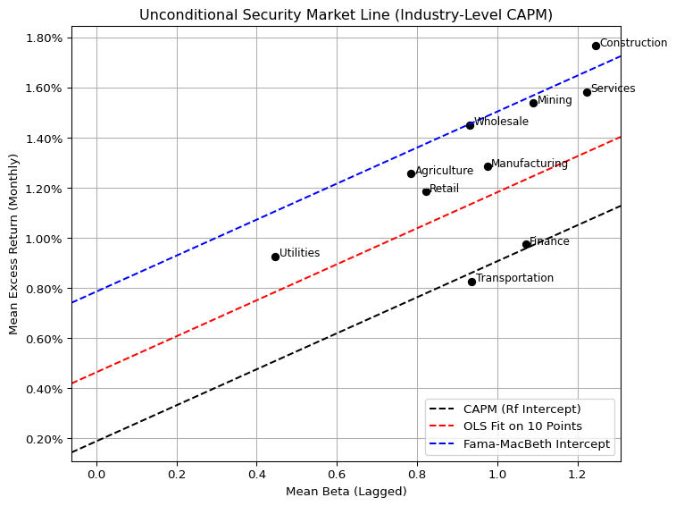
Code
#@title 개별 산업의 mispricing 정도를 파악# 1. Calculate conditional alphapfo_sml['capm_pred'] = pfo_sml['mean_beta_lag'] * mkt_excesspfo_sml['alpha'] = pfo_sml['mean_ret_excess'] - pfo_sml['capm_pred']# 2. Sort industries by alphapfo_sml_sorted = pfo_sml.sort_values(by='alpha', ascending=False)# 3. Barplot of alphaimport seaborn as snsplt.figure(figsize=(10, 6))sns.barplot(data=pfo_sml_sorted, x='alpha', y='industry', hue='industry', palette='coolwarm', dodge=False)plt.axvline(0, color='black', linestyle='--')plt.gca().xaxis.set_major_formatter(mtick.PercentFormatter(1.0))plt.xlabel('Conditional Alpha (Monthly)')plt.title('Industry-level Conditional Alpha under CAPM')plt.tight_layout()plt.show()
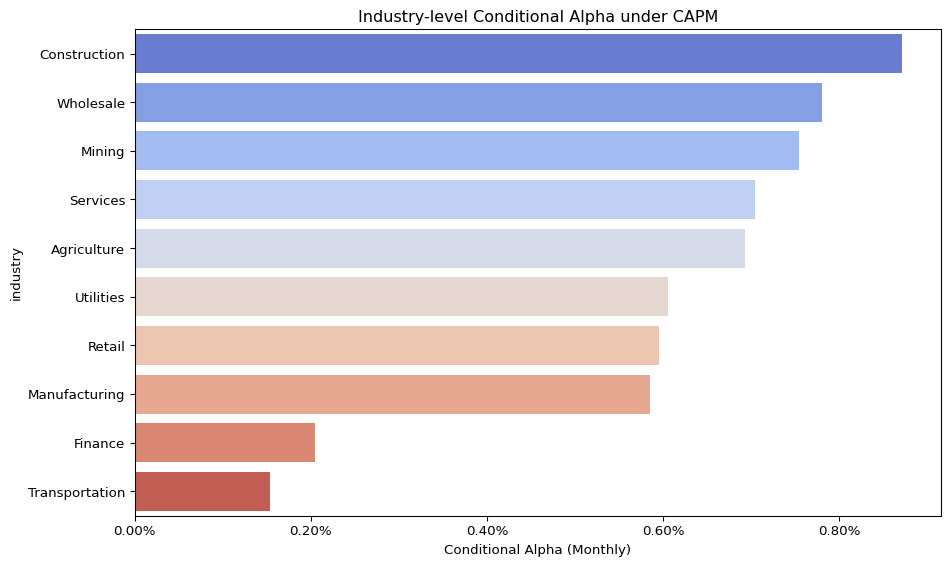
We visualize the unconditional Security Market Line (SML) implied by the single-factor CAPM across 10 value-weighted industry portfolios. Each point on the plot corresponds to an industry, placed according to its average market beta (horizontal axis) and realized average excess return (vertical axis) over the sample period.
Three lines are shown for comparison:
The black dashed line represents the theoretical CAPM SML, where the intercept equals the average risk-free rate and the slope equals the average market risk premium.
The red dashed line is a simple OLS fit across the 10 industry points, which minimizes cross-sectional error.
The blue dashed line uses the Fama-MacBeth estimated intercept, incorporating pricing errors in the CAPM framework.
Most industry points lie between the CAPM-predicted line and the Fama-MacBeth-adjusted line. This suggests that while the risk-return relationship remains approximately linear, the CAPM fails to account for substantial pricing errors, as reflected in large intercept terms.
To quantify these deviations more precisely, we calculate conditional alphas for each industry. These alphas represent the difference between realized and CAPM-predicted returns, conditional on the industry’s average beta.
Positive alpha implies the industry earned more than predicted by its systematic risk exposure.
Negative alpha suggests overvaluation relative to CAPM expectations.
The results reveal persistent mispricing across several sectors, reinforcing earlier conclusions about the model’s empirical inadequacy. The CAPM may still serve as a baseline pricing model, but the presence of large unexplained returns calls for either a multi-factor extension or a fundamental rethinking of the linear risk-return paradigm.
Conclusions
This short study evaluates the empirical validity of the single-factor CAPM using value-weighted industry portfolios over a 25-year period (1999–2023). Several key findings emerge:
Industry-specific market betas exhibit substantial time variation, contradicting the CAPM’s assumption of stable factor loadings. This instability weakens the model’s explanatory power over long horizons and complicates its use in asset pricing and cost-of-capital estimation.
The market risk premium, when estimated empirically, shows large uncertainty and wide confidence bounds, limiting its practical usefulness in capital budgeting and valuation decisions.
Fama-MacBeth regressions reveal economically large and statistically significant intercepts (alphas), while the estimated risk premium on beta is both small and statistically insignificant. This suggests that the single-factor CAPM omits important pricing components or fails to capture cross-sectional return dynamics.
Industry-level CAPM predictions show structural deviations from theoretical SML predictions. Finance and Transportation exhibit relatively low pricing errors, potentially due to regulatory distortions (e.g., “Too Big to Fail”) or reduced market responsiveness.
Lastly, the increasing dominance of a few large-cap firms—particularly in Services and Manufacturing—implies that market-wide returns are increasingly shaped by concentrated industry dynamics. This structural concentration further limits the diversification benefits assumed under standard portfolio theory.
Overall, while CAPM remains a foundational framework in asset pricing, this analysis highlights its limitations in capturing the complexities of modern equity markets—particularly when applied at the industry level over long horizons.
Footnotes
In this study, firms originally categorized under the “Public” industry in the CRSP database are reassigned to the “Services” industry group. This decision is based on a review of the largest firms within the Public category—such as Tesla, Zoom, Airbnb, PayPal, and Coinbase—which predominantly operate in service-driven, software-based, or platform-oriented business models. Although a few firms like Tesla or Kraft Heinz engage in manufacturing, the overall structure and revenue sources of the Public group are better aligned with the characteristics of modern service industries. This reassignment enhances interpretability in CAPM-based industry comparisons while maintaining consistency in economic logic.↩︎